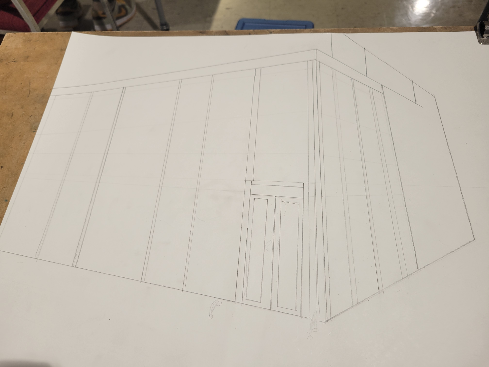
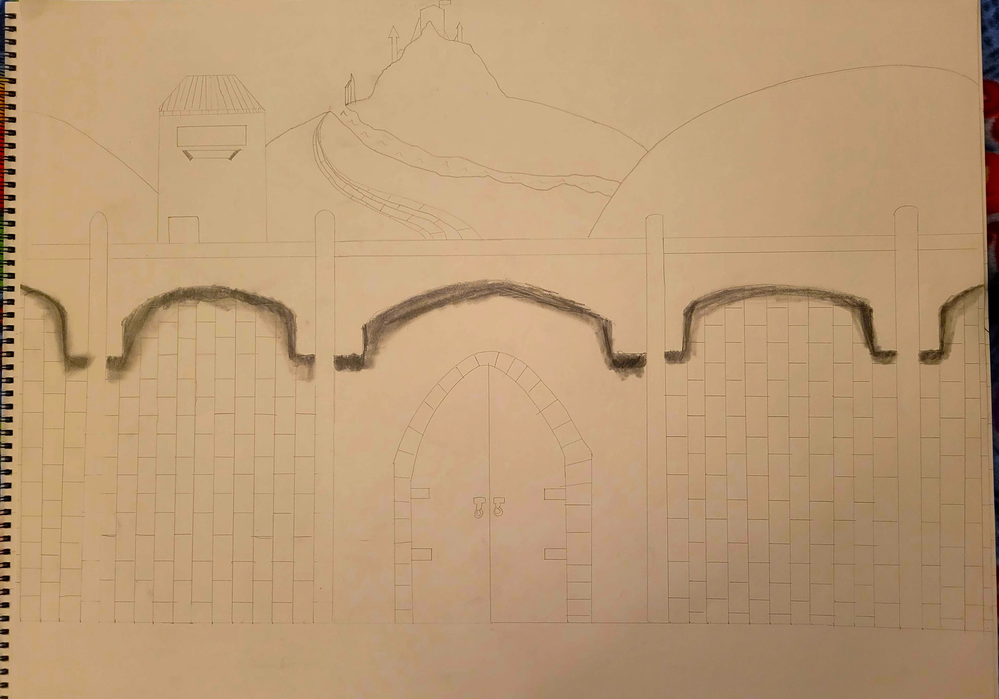
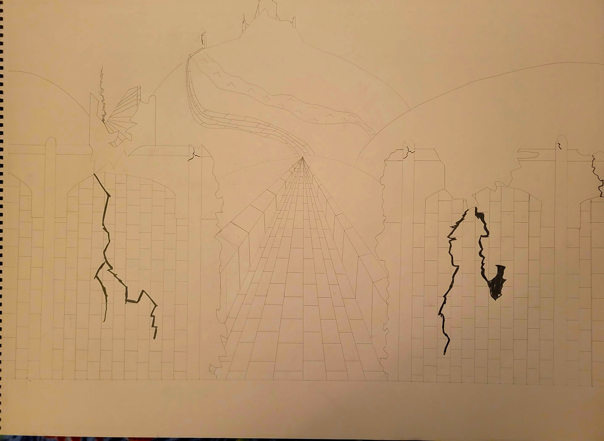
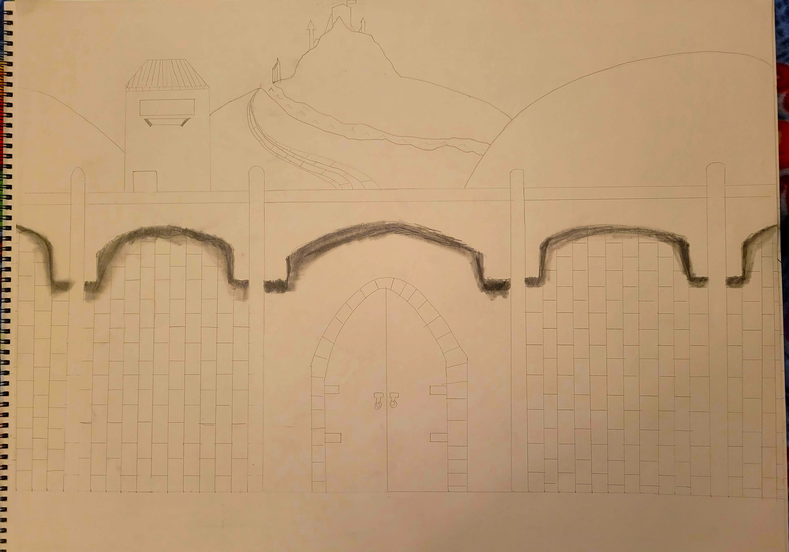
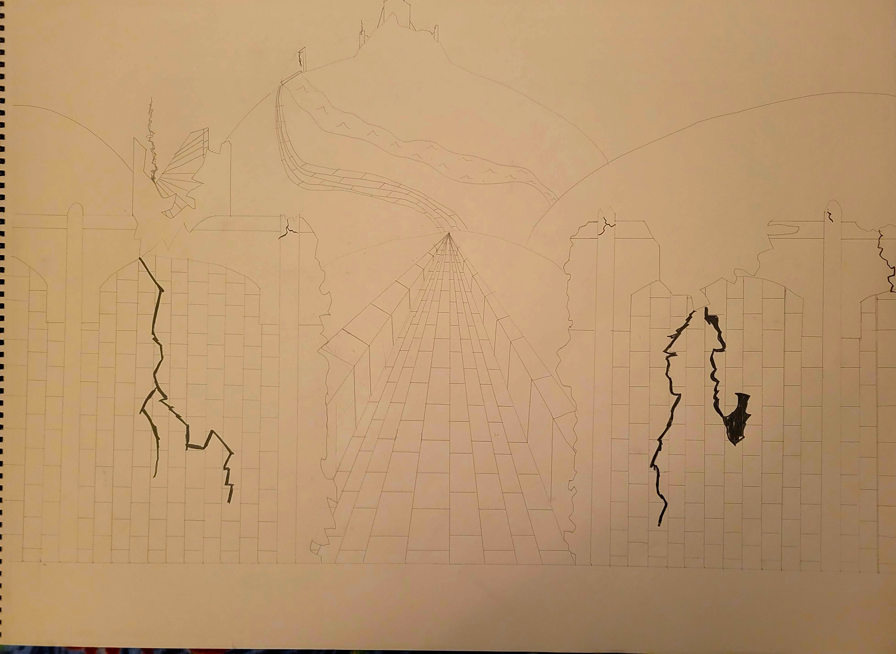

Hello anyone reading this! I am Daniel Estabrook, an artist doing their best to get better. Working mainly in digital programs akin to Photoshop and ClipStudio, I like to think I make fairly decent artwork.
Mainly focusing on linework and greyscale, I am slowly starting to expand into color work. Being very colorblind, this is quite challenging, but I am giving it a strong try.
Most of the work shown on this portfolio was created using prompts from different classes I've taken at ISU and some were made as submissions for assignments. I have, however, also been taking on some minor work on the side drawing for friends. I have made fantasy maps for DnD campaigns, rough sketchs of DnD characters, and I have started doing basic sketchs as the basis of tattoos for my friends.
Below are some random pieces I drew mainly as just doodling when I was bored or when I was sick. Sorry for the low quality on these, they are the only photos I have of the art and I have no idea where the physical verisons of these pieces are.
I really hope you enjoy looking at my artwork, and I hope everyone has a fantastic day!
 


